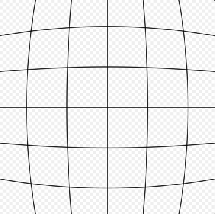
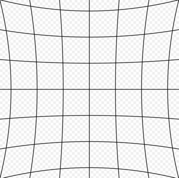
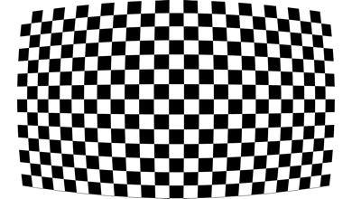
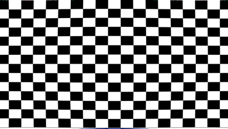
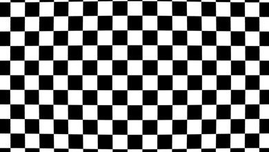
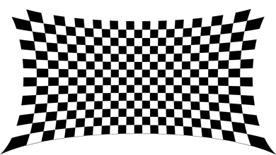
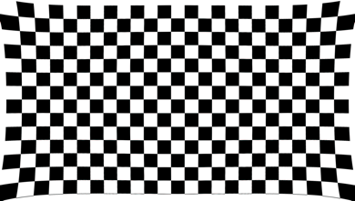

3. LDC Debugging Guide¶
3.1. Basic Concepts¶
3.1.1. Field of View¶

Figure 3.1 Horizontal Field of View (horizontal field of view), Vertical Field of View (vertical field of view), Diagonal Field of View(diagonal field of view)¶
3.2. Parameter Debugging for Different Application Scenarios¶
3.2.1. LDC¶
Configuration Parameter |
Configuration Range |
Parameter Description |
|---|---|---|
CenterXOffset |
-511~+511 |
Horizontal offset of the image center from the physical center |
CenterYOffset |
-511~+511 |
Vertical offset of the image center from the physical center |
DistortionRatio |
[-300,500] |
Correction strength; negative values indicate pincushion distortion and positive values indicate barrel distortion |
bAspect |
bool |
Whether to maintain the aspect ratio during field-of-view adjustment |
XYRatio |
0~100 |
Field-of-view size parameter, valid when bAspect=1 |
XRatio |
0~100 |
X-direction field-of-view size parameter, valid when bAspect=0 |
YRatio |
0~100 |
Y-direction field-of-view size parameter, valid when bAspect=0 |
stGridInfoAttr |
/ |
gridinfoParameters |
Configuration Parameter |
Configuration Range |
Parameter Description |
|---|---|---|
bEnable |
bool |
Whether to enable gridinfo |
gridFileName |
/ |
gridinfo file name |
gridBindName |
/ |
gridinfo binding name |
isBlending |
bool |
Not currently used |
bEISEnable |
bool |
Not currently used |
homoRgnNum |
/ |
Not currently used |
3.2.2. LDC Correction Models¶
LDCsupportsBarrel DistortionandPincushion Distortiontwo types ofcorrectionmode, if Figure 3.2 and Figure 3.4 shown.
{kind=link}

Figure 3.2 Barrel Distortion¶

Figure 3.3 No Distortion¶
{kind=link}

Figure 3.4 Pincushion Distortion¶
3.2.2.1. Barrel Correction Example¶
Parameter Description |
Parameter Settings |
Illustration |
|---|---|---|
Distortion center overlaps the image centerMaintain the aspect ratioMaintain the maximum field of view |
Width=1920 Height=1080 OutWidth=1920 OutHeight=1080 CenterXOffset/CenterYOffset=0 DistortionRatio=-165 bAspect=1 XYRatio=100 XRatio=100 YRatio=100 |
Before correction  After correction 
|
Ratio: a larger correction-strength value indicates weaker correction |
DistortionRatio=-205 |

|
bAspect: whether to maintain the aspect ratio 1:Maintain the aspect ratio 0: do not maintain the aspect ratio; retain the maximum field of view |
bAspect=0 DistortionRatio=-165 |

|
bAspect=0, XRatio, YRatio XRatio: retained horizontal field of view YRatio: retained vertical field of view bAspect=1, XYRatio Enable XYRatio: retained field of view when maintaining the aspect ratio Note: 100 retains the maximum field of view; 0 retains two-thirds of the maximum field of view |
bAspect=0, XRatio=20 bAspect=1, XRatio=20 |
  |
{kind=link}
{kind=link}
{kind=link}
3.2.2.2. Pincushion Correction Example¶
Parameter Description |
Parameter Settings |
Illustration |
|---|---|---|
Typical configuration Distortion center overlaps the image center Maintain the aspect ratio Maintain the maximum field of view |
Width=1920 Height=1080 OutWidth=1920 OutHeight=1080 CenterXOffset/CenterYOffset=0 DistortionRatio=500 bAspect=1 XYRatio=100 XRatio=100 YRatio=100 |
Before correction  After correction  |
{kind=link}
{kind=link}
3.2.3. Data Flowchart¶

Figure 3.5 LDC (Lens Distortion Correction flowchart)¶